In this section we will explore how to properly review code and suggest changes if necessary. Both science and code reviews happen in a Pull Request. The general process is outlined in the diagram below:
sequenceDiagram
accDescr {A sequence diagram showing the process of reviewing.}
autonumber
actor Developer
actor Reviewer
Developer->>Reviewer: Request a reviewer
Reviewer->>Reviewer: #32;
Note over Reviewer: Add the reviewer<br/>to the pull request
Reviewer->>Reviewer: #32;
Note over Reviewer: Perform the review
loop
Reviewer->>Developer: Submit the review
Developer->>Developer: #32;
Note over Developer: Respond to each<br/>review comment
Developer->>Reviewer: Re-request a review
Reviewer->>Reviewer: #32;
Note over Reviewer: Respond to each review<br/>comment response
end
Reviewer->>Developer: Approve the pull requestMake sure you know who is in your pair. Find your colleagues open PR on the git-training-demo repository using the Pull Requests tab or find the request for review in your notifications.
Reviewing Changes
You can add general science and code review comments in the Conversation tab. To review specific files go to the Files changed tab:
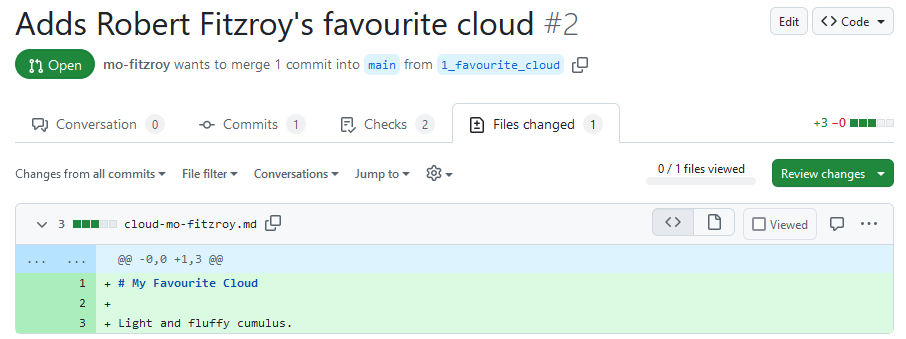
This tab shows a diff (difference) between your feature branch, 1_favourite_cloud, and the target branch, main. Your diff might look different, to swap between Unified and Split view click on the cog dropdown:
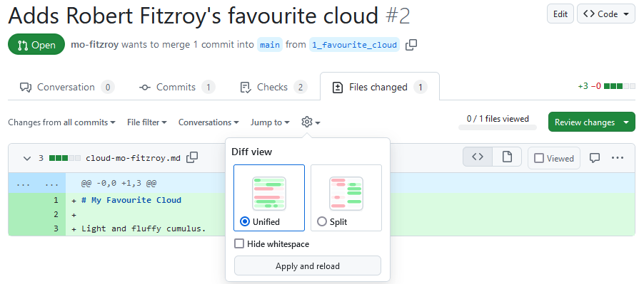
The default view shows a diff of the source code. We’ll stick with source code diffs for this lesson but you can change the view to rich diffs to display rendered changes to Markdown or Jupyter Notebook files. Click on the file icon on the far right of a diff for the file to swap to a rich diff:
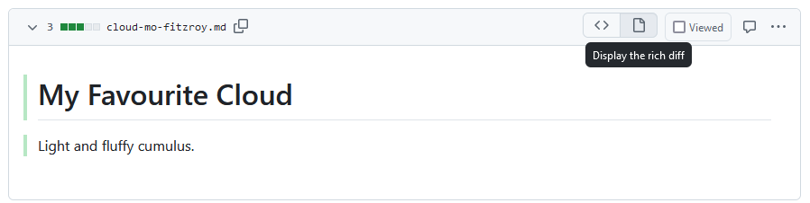
To start a review you can click on the green Review changes button:
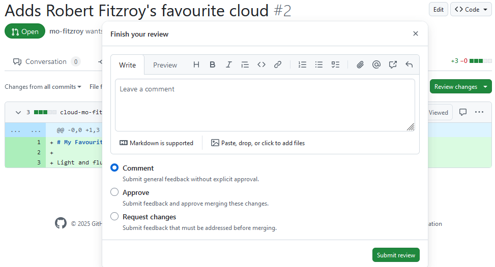
Normally it is useful to review each file one at a time and make comments inline first before adding general comments. Close the review popup and hover next to a line number until it becomes highlighted. Click on the line to add an inline comment:
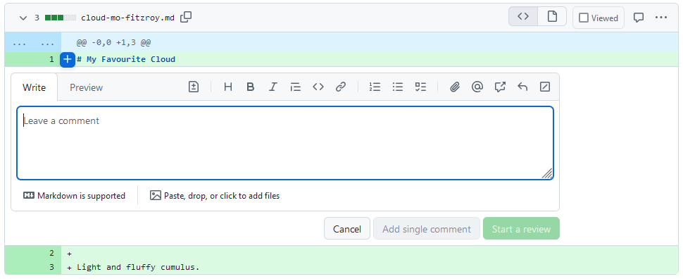
You can make suggested changes using inline comments. Click on the file icon or press Ctrl+g:
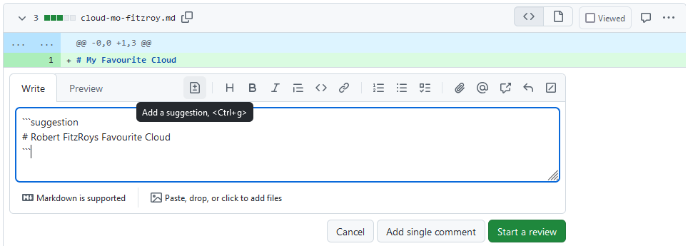
Add in a suggested change for your review. Click on the green Start a review button. Now click on the green button in the top right which says Finish your review or Review Changes, add a comment, and select Request changes. When you’re finished click the green Submit review button.
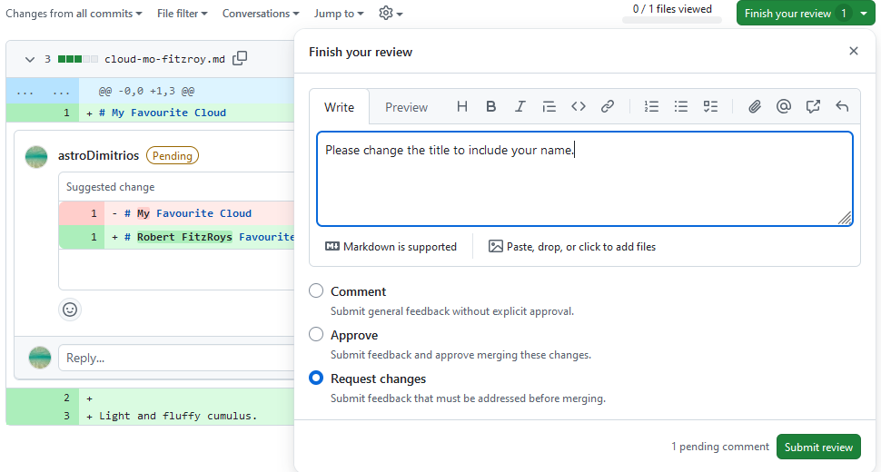
The PRs Conversation tab now looks like this:
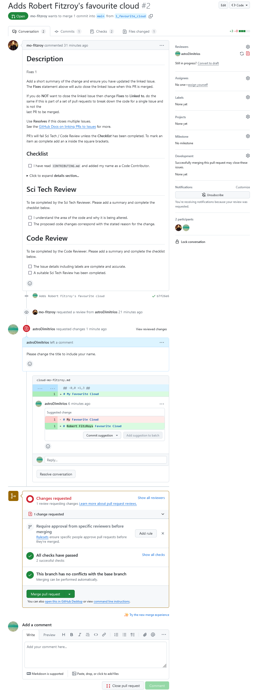
Responding to Review
Now you will respond to the review on the PR that you opened.
You can see merging is blocked because our reviewer has requested changes. You also have the option to commit the suggested change to your branch directly via the PR. Click on the Commit suggestion button. In the popup add a description then click on Commit changes:
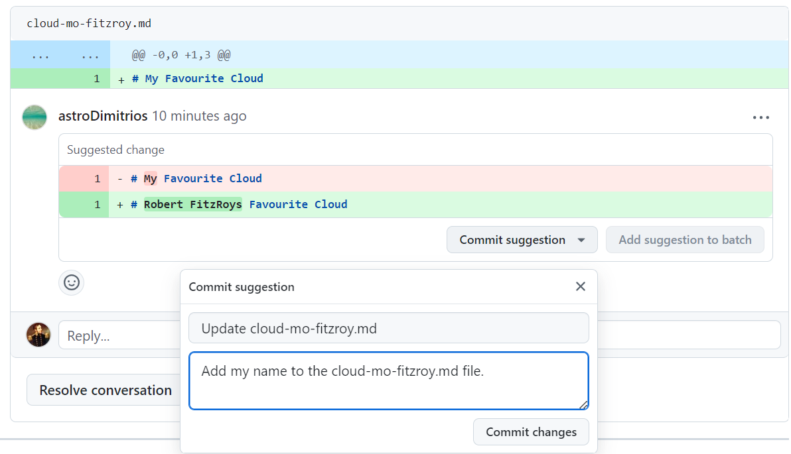
You could have also committed the suggested changes to your feature branch using your local copy, pushed the changes to GitHub and then marked the conversation with the suggested change as resolved.
Re-request a review by clicking on the two arrows forming a circle next to the reviewers name at the top of the PR.
Help: Some checks have failed
Since our PR is running automatic checks it’s best not to make large changes by accepting suggestions this way. Instead make changes to your feature branch using your local copy, run the checks locally, push the changes to GitHub and then mark the conversations with the suggested changes as resolved. You can add a commit hash in the conversation which will automatically link to the commit responding to any review comments.
Approving Changes
Head back to your partners PR, if they re-requested a review you will have received another notification.
The Conversation tab should update to show the suggestion as Outdated because it has been resolved. It also gives you the option to view the new changes since your last review.
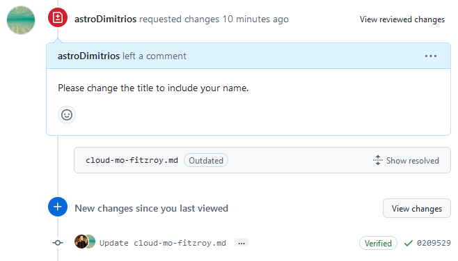
Click on the View changes button. If you are happy that your requested changes have been addressed then you can approve the PR:
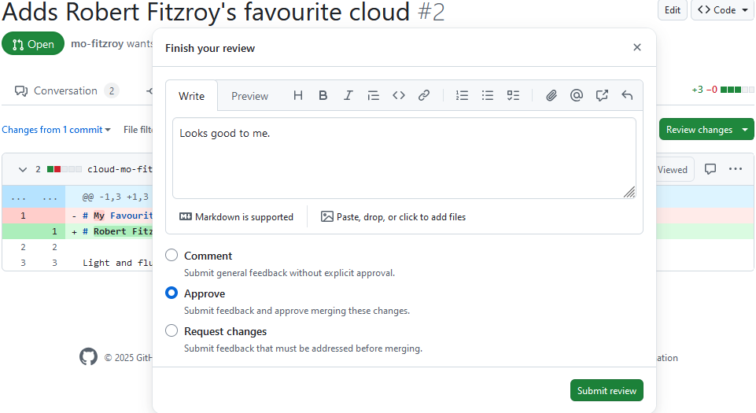
Swap back to the Conversations tab. The PR is now ready to merge and has no conflicts with the base (main in this case) branch. Click Squash and merge; don’t forget to move the PR number to the start of the commit message like you did in the Version Control with Git lesson:
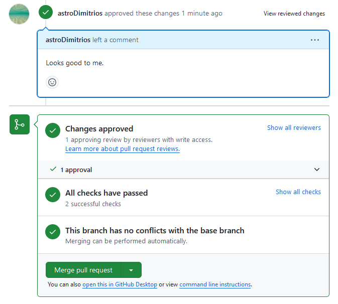
When your PR is merged the Conversations tab will show:
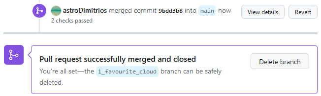
You can now delete the branch from GitHub by pressing the Delete branch button. Some repositories will be automatically set up to delete the feature branch after a PR is successfully merged.
If you head back to the main page of the git-training-demo repository you will see your new file in the code view for the main branch. The commit message for the PR merge is shown next to it. If you hover over the PR number (in this case #2) a popup will appear with details of the merged PR. Click on the number to take you to the closed PR.
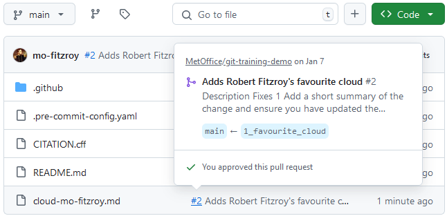
Head over to the repositories Issues tab. Check that your Issue for adding your favourite cloud file was closed when you merged the PR.
Local Cleanup
In the git-novice lesson you learnt how to pull changes and clean up your branches after merging a PR.
You can now:
- Update your local copy of the
git-training-demorepository - Delete any branches that are no longer necessary
Solution (Solution).
- Update your local copy of the
git-training-demorepository
$ git switch main
$ git pullremote: Enumerating objects: 4, done.
remote: Counting objects: 100% (4/4), done.
remote: Compressing objects: 100% (3/3), done.
remote: Total 3 (delta 1), reused 0 (delta 0), pack-reused 0 (from 0)
Unpacking objects: 100% (3/3), 1.07 KiB | 20.00 KiB/s, done.
From github.com:metoffice/git-training-demo
39720d8..9bdd3b8 main -> origin/main
Updating 39720d8..9bdd3b8
Fast-forward
cloud-mo-fitzroy.md | 3 +++
1 file changed, 3 insertions(+)
create mode 100644 cloud-mo-fitzroy.md- Delete any branches that are no longer necessary
$ git remote prune originPruning origin
URL: git@github.com:metoffice/git-training-demo.git
* [pruned] origin/1_favourite_cloud$ git branch -D 1_favourite_cloudDeleted branch 1_favourite_cloud (was b7f26e6).Keypoints
- A Pull Request (PR) is where your code and science review takes place.
- General review comments go in the PR Conversations tab.
- View a diff of the changes in the PR Files changed tab.
- Make inline comments or suggested changes in the Files changed tab using the diff.